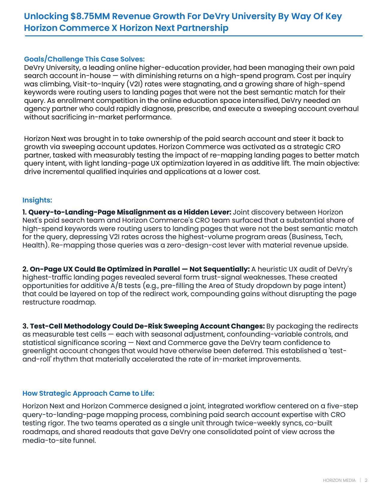
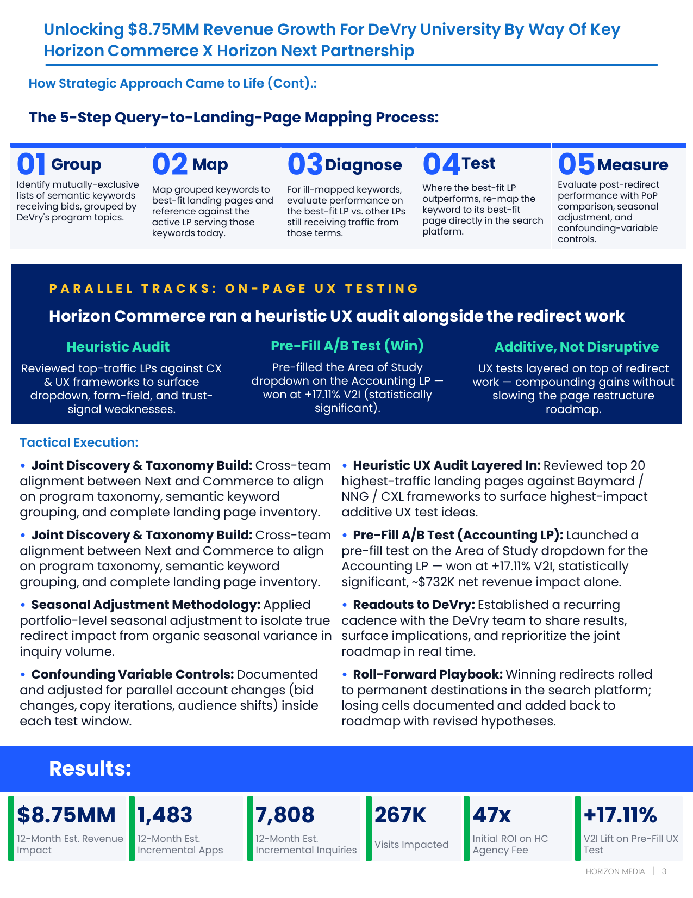
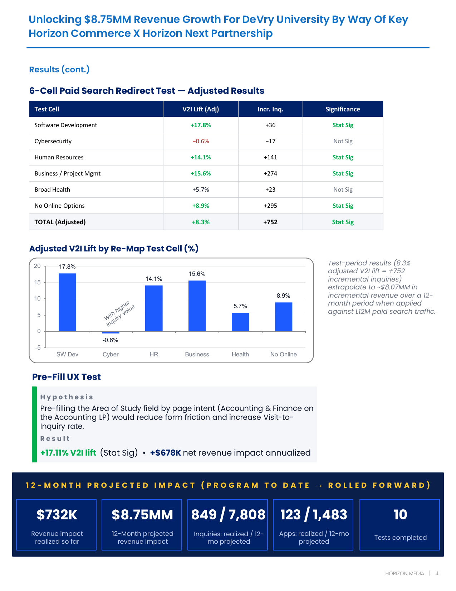
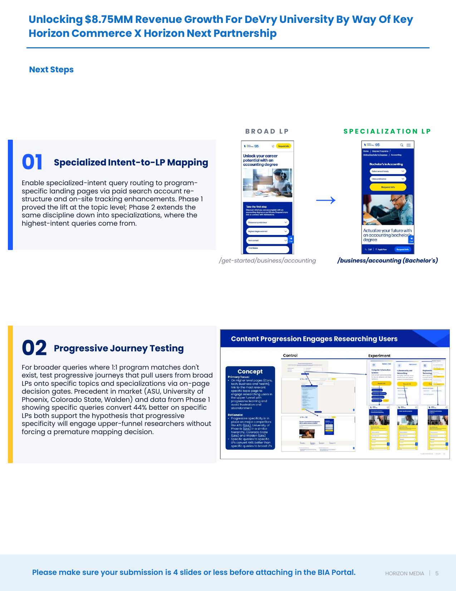

Unlocking $8.75MM Revenue Growth For DeVry Through Intent-to-LP Alignment
A joint paid search and CRO partnership re-mapped high-spend keywords to better-fit landing pages, layered in additive UX tests, and turned a stagnating account into $8.75MM in projected annualized revenue at 47x agency-fee ROI.
The Challenge
DeVry University, a leading online higher-education provider, had been managing their paid search account in-house — and returns were diminishing on a high-spend program.
- Cost per inquiry was climbing
- Visit-to-Inquiry (V2I) rates were stagnating
- A growing share of high-spend keywords were routing users to landing pages that were not the best semantic match for the query
As enrollment competition intensified, DeVry needed an agency partner who could rapidly diagnose, prescribe, and execute a sweeping account overhaul without sacrificing in-market performance. Horizon Next took ownership of the paid search account; Horizon Commerce was activated as the strategic CRO partner — tasked with measurably testing the impact of re-mapping landing pages to better match query intent, with light landing-page UX optimization layered in as additive lift.
Key Insights

Three insights from joint discovery between paid search and CRO drove the strategy:
- Query-to-Landing-Page misalignment as a hidden lever: A substantial share of high-spend keywords routed users to landing pages that weren't the best semantic match — depressing V2I across the highest-volume program areas (Business, Tech, Health). Re-mapping was a zero-design-cost lever with material revenue upside.
- On-page UX could be optimized in parallel — not sequentially: A heuristic UX audit of DeVry's highest-traffic landing pages surfaced form trust-signal weaknesses. Additive A/B tests (e.g. pre-filling Area of Study by page intent) could compound gains without disrupting the page restructure roadmap.
- Test-cell methodology could de-risk sweeping account changes: Packaging redirects as measurable test cells — each with seasonal adjustment, confounding-variable controls and statistical-significance scoring — gave DeVry the confidence to greenlight changes that would have otherwise been deferred.
Strategic Approach
Horizon Next and Horizon Commerce designed a joint, integrated workflow centered on a five-step query-to-landing-page mapping process — combining paid search account expertise with CRO testing rigor.
- Group: Identify mutually-exclusive lists of semantic keywords receiving bids, grouped by DeVry's program topics
- Map: Map grouped keywords to best-fit landing pages and reference against the active LP serving those keywords today
- Diagnose: For ill-mapped keywords, evaluate performance on the best-fit LP vs. other LPs still receiving traffic from those terms
- Test: Where the best-fit LP outperforms, re-map the keyword to its best-fit page directly in the search platform
- Measure: Evaluate post-redirect performance with PoP comparison, seasonal adjustment, and confounding-variable controls
The two teams operated as a single unit — twice-weekly syncs, co-built roadmaps, and shared readouts gave DeVry one consolidated point of view across the media-to-site funnel.

Tactical execution stayed disciplined throughout:
- Joint discovery & taxonomy build: Cross-team alignment on program taxonomy, semantic keyword grouping, and complete landing-page inventory
- Seasonal adjustment methodology: Portfolio-level adjustment to isolate true redirect impact from organic seasonal variance in inquiry volume
- Confounding variable controls: Documented and adjusted for parallel account changes (bid changes, copy iterations, audience shifts) inside each test window
- Heuristic UX audit layered in: Reviewed top 20 highest-traffic landing pages against Baymard / NNG / CXL frameworks to surface highest-impact additive UX test ideas
- Pre-fill A/B test (Accounting LP): Pre-filled the Area of Study dropdown — won at +17.11% V2I, statistically significant, ~$732K net revenue impact alone
- Roll-forward playbook: Winning redirects rolled to permanent destinations in the search platform; losing cells documented with revised hypotheses
Results
The 6-cell paid search redirect test posted a +8.3% adjusted V2I lift in aggregate (statistically significant), with four of six cells winning outright:
- Software Development: +17.8% V2I, +36 incremental inquiries (Stat Sig)
- Human Resources: +14.1% V2I, +141 incremental inquiries (Stat Sig)
- Business / Project Mgmt: +15.6% V2I, +274 incremental inquiries (Stat Sig)
- No Online Options: +8.9% V2I, +295 incremental inquiries (Stat Sig)
- Broad Health: +5.7% V2I (Not Sig)
- Cybersecurity: −0.6% V2I (Not Sig)
Test-period results extrapolate to ~$8.07MM in incremental revenue over a 12-month period when applied against L12M paid search traffic. The parallel Pre-Fill UX test on the Accounting LP added +17.11% V2I (Stat Sig) and ~$678K in annualized impact.

Combined results across the redirect program and the additive UX test are extrapolated forward to 12 months:
- $8.75MM: 12-month estimated revenue impact
- 1,483: 12-month estimated incremental applications
- 7,808: 12-month estimated incremental inquiries
- 267K: Visits impacted
- 47x: Initial ROI on Horizon Commerce agency fee
- +17.11%: V2I lift on Pre-Fill UX test
- $732K: Revenue impact realized so far
- 10: Tests completed
What's Next
Two phases extend the validated thesis from topic-level alignment into deeper specialization and broader-query journey design:
- Specialized Intent-to-LP Mapping: Enable specialized-intent query routing to program-specific landing pages via paid search account restructure and on-site tracking enhancements. Phase 1 proved the lift at the topic level; Phase 2 extends the same discipline down into specializations, where the highest-intent queries come from.
- Progressive Journey Testing: For broader queries where 1:1 program matches don't exist, test progressive journeys that pull users from broad LPs onto specific topics and specializations via on-page decision gates. Precedent in market (ASU, University of Phoenix, Colorado State, Walden) and Phase 1 data showing specific queries convert 44% better on specific LPs both support the hypothesis that progressive specificity will engage upper-funnel researchers without forcing a premature mapping decision.

Appendix
Full Slide Deck